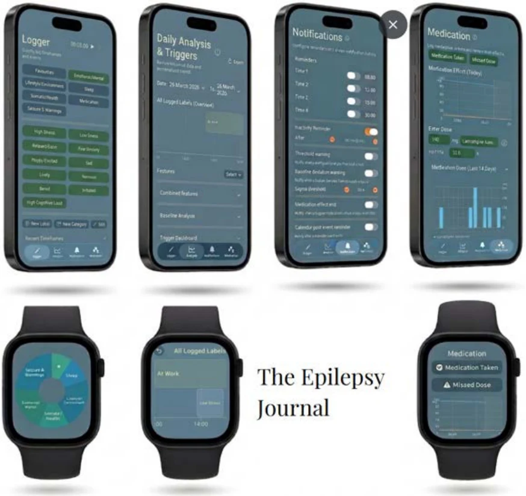
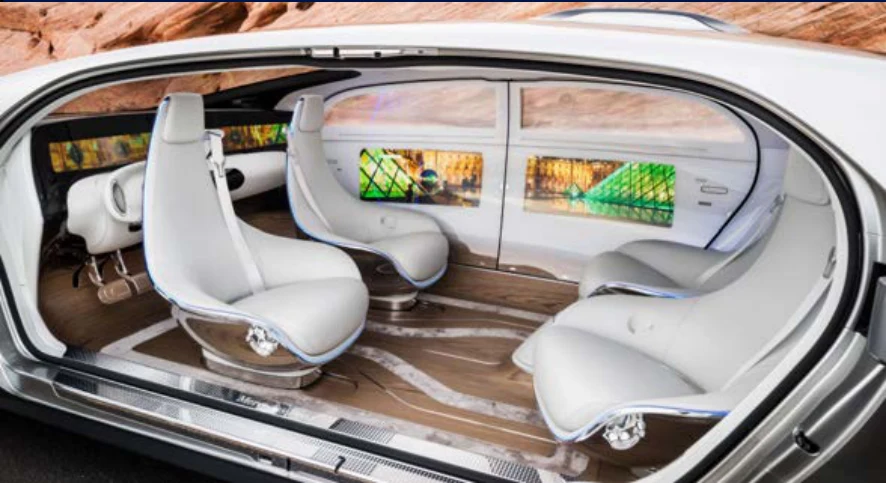

Dirk Lagemaat · Industrial designer
Rotterdam, NetherlandsConsidered design.
Meaningful change.
I turn complex challenges into products, services and systems that work for people. From the first question to a tangible solution.
Explore selected workSelected work
01—04 / Portfolio 2026
01Product engineering
Infant Growth Monitor
An integrated measurement system for community healthcare in rural Cameroon.

02Digital health
The Epilepsy Journal
Connecting daily experiences with physiological data for more personal epilepsy research.

03Circular systems
Circular Healthcare
Rethinking hospital plastic waste as a circular service and business model.

04Computational design
Vehicle Interior Model
Testing autonomous vehicle interiors against a diverse range of bodies.
Perspective
Seeing the bigger picture.
Making the details work.
My work connects human needs, technical feasibility and the systems around a product. A background in Integrated Product Design at TU Delft allows me to move between research, engineering, prototyping and software development.
About my approach